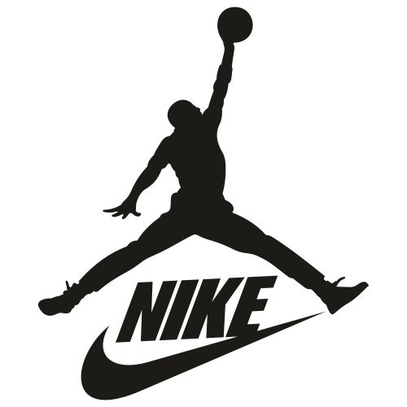
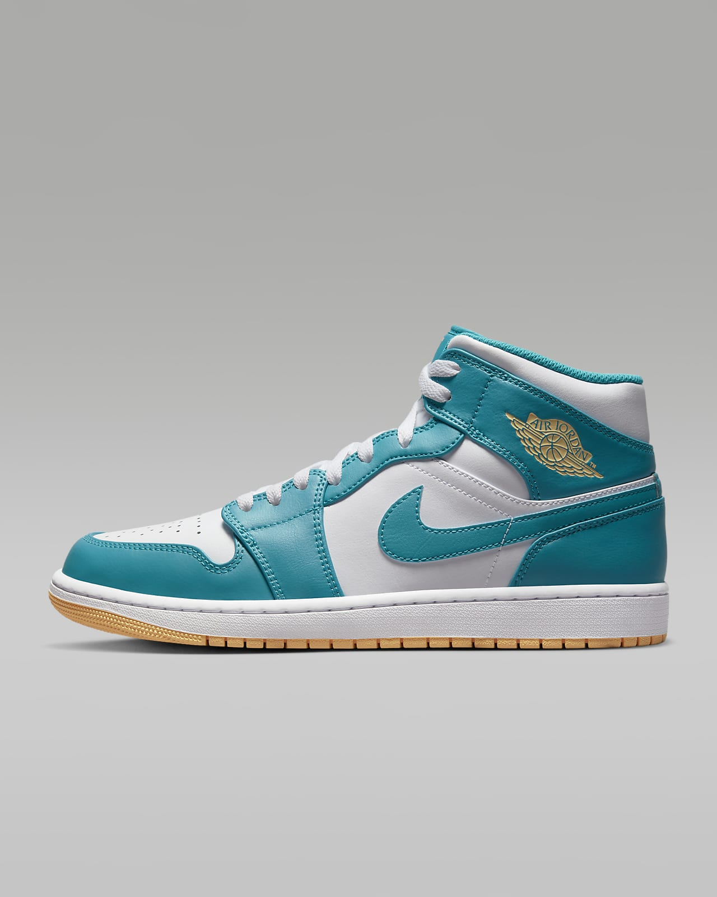

Nike Jordan 
|
|
|---|---|
| Inicio | Productos |
|  |  |
| You're fearless. It's in your DNA. Celebrate what defines you with this bold AJ1. Inspired by the 1985 original, this pair offers a clean, classic look that's familiar yet always fresh. With chain-stitched details and an embroidered Wings logo on the heel, these J's are a perfect example of what makes Jordan Brand so special. Shown: White/White/Black/Industrial Blue Style: FV3622-141 | |

|

|
| Created for the hardwood but taken to the streets, the Nike Dunk Low Retro returns with crisp overlays and original team colors. This basketball icon channels '80s vibes with premium leather in the upper that looks good and breaks in even better. Modern footwear technology helps bring the comfort into the 21st century. Shown: White/White/Black Style: DD1391-100 | |
Redes  
|
|